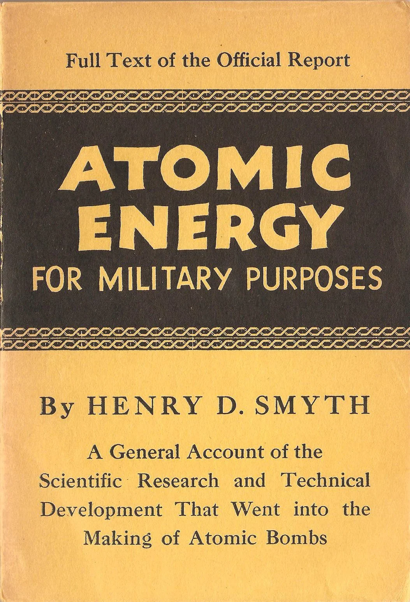
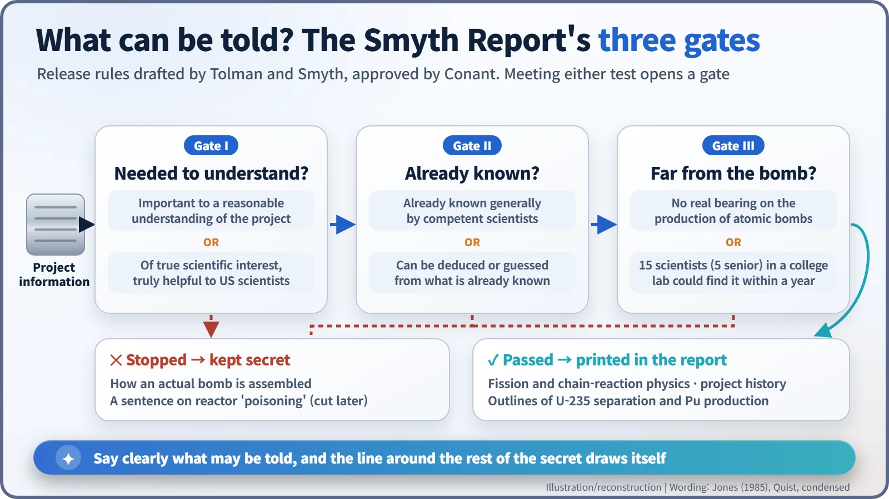
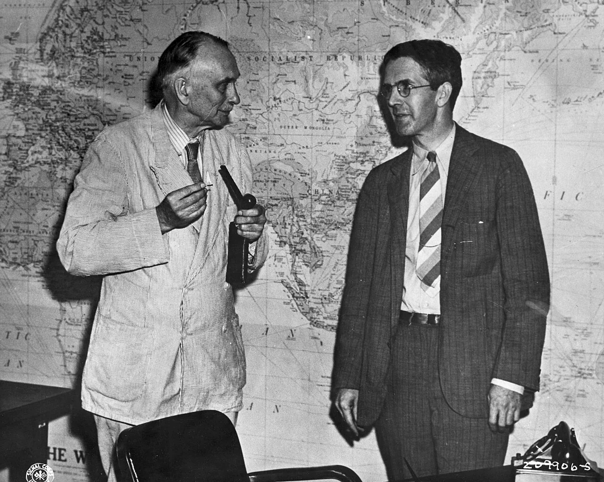
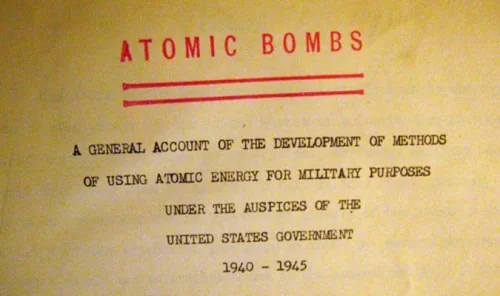
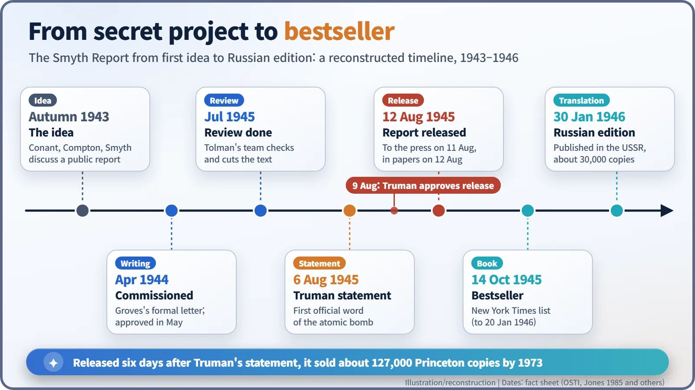

Nuclear History · 123
A Bestseller That Opened With "Ask No Further": The Smyth Report, the Official Guide to the Atomic Bomb (1945)
A book that warned readers not to ask for more, and told them that citizens must be informed, drew an official line between telling and keeping atomic secrets.
On 12 August 1945, six days after President Truman announced the atomic bomb, the U.S. government released Atomic Energy for Military Purposes, written by the Princeton physicist Henry DeWolf Smyth. Built on explicit rules for what could be told, it became a bestseller, and the Soviet Union printed about 30,000 copies of a Russian translation.
A warning and an invitation
Imagine buying a book and finding this on one of its first pages: no requests for additional information should be made to anyone connected with the project, and anyone who discloses or obtains more without authorisation faces "severe penalties under the Espionage Act." Turn the page, and the author seems to say the opposite: "The ultimate responsibility for our nation's policy rests on its citizens and they can discharge such responsibilities wisely only if they are informed." [2]
A warning and an invitation, bound into the same volume. That is how Atomic Energy for Military Purposes, better known as the Smyth Report, begins. In the autumn of 1945 it was an American bestseller.

A book written before the bomb went off
The Manhattan Project was secret throughout the war, but its leaders knew the secret would collapse the moment a bomb was used. In the autumn of 1943 James B. Conant, Arthur Compton and Henry DeWolf Smyth (1898–1986), chairman of the physics department at Princeton, discussed a technical report that could be made public. In March 1944 Vannevar Bush separately proposed a technical history, and Conant recommended Smyth. In April 1944 General Leslie Groves asked him to write it in a formal letter. [1] [4]
The report had two purposes: to help the public debate the new weapon rationally, and to fix in writing what could be said, which would make it easier to protect what could not. Draw a clear line around what may be told, and everything beyond it is plainly off limits. [1]
What goes in? Three gates
The rules were drafted by the Caltech physicist Richard C. Tolman (1881–1948) and Smyth, and approved by Conant. A piece of information had to pass three gates, and each gate could be passed in one of two ways: [3]
- It was important to "a reasonable understanding of what had been done on the project as a whole", or it was "of true scientific interest and likely to be truly helpful to scientific workers in this country".
- It was "already known generally by competent scientists", or it could "be deduced or guessed by competent scientists from what is already known".
- It had "no real bearing on the production of atomic bombs", or it could be discovered by "a small group (15, of whom not over 5 would be senior men) of competent scientists working in a well-equipped college lab in a year's time or less".

So the physics of fission and chain reactions went in, along with the history of the committees and organisations, and the names and outlines of the methods for separating uranium isotopes and producing plutonium. How an actual bomb is put together stayed out. Tolman's team finished reviewing the manuscript in July 1945. According to one account, passages on the bomb's moral implications and its makers' unease were also removed at the urging of Smyth's superiors. [3] [4]

Six days apart
The order of events is easy to mix up. The first official announcement of the atomic bomb was President Truman's statement of 6 August 1945. The report came later. Its publication was discussed in Secretary of War Henry Stimson's office on 2 August, and on 9 August, the day Nagasaki was bombed, Truman approved immediate release. The report went to the press on 11 August and appeared in the papers on Sunday 12 August. The original lithoprinted edition is said to have run to about 1,000 copies. [1] [4]

A government report on the bestseller list
Demand outran what the Government Printing Office could supply. Smyth persuaded Princeton University Press to publish the book, on one condition: he would take no royalties. The copyright page read: "Reproduction in whole or in part authorized and permitted." Nobody could claim the text for themselves, and anybody could reprint it. The book was on The New York Times bestseller list from 14 October 1945 to 20 January 1946, and the Princeton edition sold about 127,000 copies before it went out of print in 1973. [4]
Britain was surprised at first that the Americans wanted to publish at all. James Chadwick, head of the British scientific mission, was alarmed when he read the manuscript, but in the end accepted the reasoning of Groves and Conant. Feeling that the report left out Britain's part, the British government issued its own report, which was added as an appendix from the fifth printing in November 1945. [4]

The most careful readers were in Moscow
There was an irony. The Soviet Union translated the report into Russian and printed about 30,000 copies on 30 January 1946. According to the historian Richard Rhodes, the original text contained one sentence alluding to a "poisoning" effect, in which fission products interfere with the chain reaction in a production reactor. That sentence disappeared from the Princeton edition, and the Russian translators noticed the difference. The gap itself signalled that something there mattered. [5]
A line between telling and keeping
The Smyth Report drew, in an official document, a line between what to tell and what to keep. The same question was carried into law the following year, when the McMahon Act put control of atomic information on a statutory footing. Smyth himself later served on the Atomic Energy Commission (1949–1954); in 1954 he was the only commissioner to vote against stripping J. Robert Oppenheimer of his security clearance. From 1961 to 1970 he represented the United States at the International Atomic Energy Agency. [6]
The book that bound a warning and an invitation together shows how the idea took shape that, even in an age of secrecy, citizens are owed an explanation.